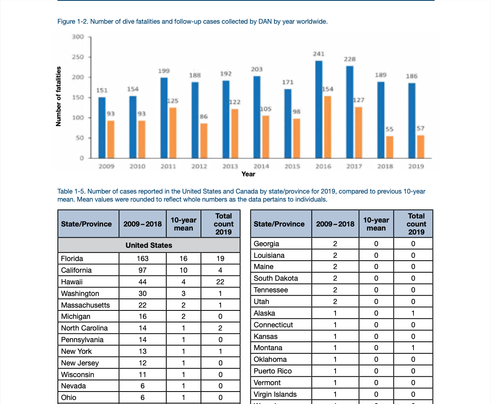

Data Source and Extraction
Data Source
The primary data source is the Divers Alert Network (DAN) annual diving reports. Diver’s Alert Network is the world's leading credible dive safety association. These reports provide annual fatality summaries and associated variables compiled in report tables. Variables extracted for this project include age, sex, diver certification level, country and region, depth at fatality, yearly fatality totals, breathing apparatus, buddy status, gas type, trigger of fatality, phase of dive, mechanism of injury, disabling injury, stated cause of death, month, medical examination information, medical history, BMI, certification level, years since initial certification, diving activity, visibility, sea conditions, current, equipment, and other related fields.
Data Extraction
Data Extraction was the most time-consuming aspect of the project. The DAN annual diving reports for each year were downloaded as a pdf. Specific data was displayed in tables, while others were displayed in bar charts. The data had to be copied and pasted or manually extracted by typing in Excel. Excel files were then sorted by variables and type of data and combined with other yearly values. Certain tables such as cause of death, disabling injury, and similar had to be grouped together by similar mechanisms. The data was then sorted manually by adding together multiple tables. There were over 200 tables of data from numerous years that had to be combined. Once the tables were completed, they were exported into their own excel file and read in through python.

Citation: Divers Alert Network (DAN).
Geographic Analysis Methodology
To visualize the geographic distribution of scuba diving fatalities, the country-by-year data were first reshaped from wide format into long format so that each record represented a specific country and year. The fatalities were then aggregated by country and by year to produce totals for both the full period and individual years. Country names were matched to country codes which allowed the data to be displayed on a Plotly choropleth map. An animated year-by-year map with a slider to show changes over time was created.
Depth Methodology
The depth analysis file contained three main fields: year, max depth category, and fatality count. In Python, the table was cleaned and reshaped into long format so each row represented one depth category in one year with its corresponding count. After cleaning labels and converting counts to numeric values, fatalities were aggregated by depth category to identify the most common maximum-depth categories.
The visualization produced was a bar chart titled "Most Common Max Depth." This chart was created in Matplotlib/Seaborn and used to summarize which depth ranges had the highest reported fatality concentrations.
Pre-Existing Medical Conditions Methodology
To assess whether specific pre-existing medical conditions were associated with specific disabling injuries in scuba diving fatalities, a year-level correlation analysis was conducted using Diver Alert Network fatality data. The medical-condition table and disabling-agent table were aggregated by year. Medical-condition table held data of yearly table counts of diver’s pre-existing medical conditions in the fatality data and Disabling-agent table held data of diver’s disabling agent that lead to their fatality. For each year, the count prevalence of medical conditions and disabling agents were calculated, then aligned both datasets to overlapping years only. The top 12 most frequent medical conditions and top 12 most frequent disabling agents were filtered. The Spearman rank correlation coefficients for every condition and agent pair were computed across years. The Spearman rank correlation was selected because the data are non-normal count series with small sample size by year. The goal was to detect consistent directional co-movement rather than assume linear relationships. Correlations range from (-1,1) where positive values indicate that years with higher prevalence of a condition also tend to have higher prevalence of a disabling agent.
Why Spearman Rank Correlation
Spearman rank correlation was chosen because the structure of this dataset is nonlinear and non-normal, even though it is recorded as counts. Unlike simple linear methods, Spearman correlation is designed to detect consistent directional relationships in ranked patterns over time, which is what matters in this fatality data. This method identifies whether years with higher prevalence of a medical condition also tend to be the same years with higher prevalence of a specific disabling agent. This makes the ordering of years from low to high prevalence more meaningful than raw scale alone. Values between -1 and 1 provide interpretable directional evidence of association without overfitting. This is appropriate for exploratory fatality research where the goal is to identify risk patterns rather than claim causal prediction.
Scuba Diving Fatalities Network Analysis Methodology
The Model
The model uses data from the 2010–2020 Diver Alert Network annual dive reports. Categories are treated as a conceptual weighted pathway network, where fatalities move through four stages: Trigger, Mechanisms, Disabling Factor, and Cause of Death. Within each yearly dataset, fatalities were classified according to the specific category identified at each stage, along with the corresponding number of cases. These counts were then used as edge weights to represent the relative frequency of pathways linking one stage to the next.
Trigger
Trigger is the initiating event or condition that starts the accident sequence and disrupts the safe dive. Triggers were separated into five categories:
- Medical: Health Problem, Cardiac Event, Natural Disease, Heart Problems
- Human Behavior: Panic, Inexperience, Drug, Alcohol, Exertion
- Equipment: Breathing Issues Due to Equipment, Gas Toxicity, Malfunctioning Parts or Incorrect Usage
- Environmental: Entrapment, Entanglement
- Ascent / Buoyancy: Buoyancy Problem, Rapid Ascent
Mechanism of Injury
Mechanism is the process through which the trigger causes harm. It explains how the initial problem develops into a dangerous emergency. Mechanisms were separated into five categories:
- Gas/Breathing: Out of Air, Breathing Issues, Gas Toxicity, Suffocation, Insufficient Breathing Gas, Immersion Pulmonary Edema, Asphyxia
- Human Behavior: Panic, Exhaustion, Intoxication, Diver Error
- Pressure/Ascent: Deep Dive Ascent, Breath-Hold Ascent, Decompression Sickness, Buoyancy, Rapid Ascent
- Medical: Hypertension/Cardiovascular Disease, Heart Problem, Stroke, Seizure, Natural Disease
- Environmental / Equipment: Striking an Object, Entanglement, Equipment Malfunction, Marine Life Attack
Disabling Injury
Disabling Injury is responsible for incapacitation. When a death occurs after the diver leaves the water, the Cause of Death and Disabling Injury are usually the same. Disabling Injuries were sorted into four categories:
- Drowning / Respiratory: Respiratory Distress, Immersion Pulmonary Edema, Drowning, Asphyxia
- Cardiovascular / Neurological: Cardiac, Stroke, Loss of Consciousness, Seizure, General Health Issue
- Pressure Injury: Arterial Gas Embolism, Decompression Sickness, Pressure-Related
- Environmental: Blunt Head Trauma, Striking Object, Bite from Marine Life, Carbon Monoxide Poisoning
Cause of Death
Cause of death is the final medical reason the diver dies and is extracted from the autopsy report. Categories were sorted into five groups:
- Drowning: Drowning, Respiratory Issue, Asphyxia, Immersion Pulmonary Edema
- Cardiac / Heart: Cardiac Issue, Heart Problem, Cardiovascular Disease
- Pressure Injury: Decompression Sickness, Pressure-Related, Arterial Gas Embolism
- Trauma / Toxic: Carbon Monoxide Poisoning, Head/Brain Injury, Blunt Force Impact, Intoxication
- Environmental: Marine Life Bite, Bite Venom, Entanglement
Categories within each stage were created because raw categories are often too granular. Some factors such as arterial gas embolism and decompression sickness are results of the same ultimate factor (pressure changes), so combining them reduces noise, makes pathways clearer, increases statistical reliability, and aligns with clinical/physiological reality.
Python Methodology
Proportion tables were created for each stage. For each year, each category's percentage of that stage's total is calculated. This normalizes across years so that changes in total incident numbers don't artificially inflate pathways. Some years have more total counts, so proportions accurately indicate the more common categories.
Edges are built by multiplying proportions across stages. This represents co-occurrence probability. For example, if equipment failures happen 20% of the time in triggers, and gas problems happen 30% of the time in mechanisms, their combined pathway weight reflects the probability that an equipment failure leads through to a gas mechanism.
The proportions are then scaled by year totals. This converts proportions back into meaningful magnitude. For example, a 6% pathway in a year with 50 total incidents has different weight than if the 6% was in a year with 500 incidents.
Converting to NetworkX DiGraph
A digraph is a directed graph in which edges have direction. This represents the flow from trigger to mechanism to disabling agent to cause of death as causal sequences flow in one direction. Each edge carries a weight which is the calculated pathway strength.
Metrics
Strengths such as In-Strength, Out-Strength, and Total Strength were calculated:
- In-Strength: How much "flow" comes into this node (how important is it as a destination?)
- Out-Strength: How much "flow" goes out of this node (how important is it as an origin?)
- Total Strength: Sum of In and Out strength; raw "traffic" through the node
For example, the drowning cause of death has 201.1 in-strength and 0 out-strength, representing that it's terminal with no other route possible. Cardiovascular/Neuro Disabling Agent has 117.98 in-strength and 156.51 out-strength, indicating it is a hub. Clinical interpretation: Strength tells you the magnitude of the problem. Drowning's high in-strength means lots of pathways lead there. Cardiovascular's high out-strength means many pathways diverge, some to drowning and some to other causes.
PageRank was also computed. PageRank is a ranking of important nodes determined by whether they receive edges from important nodes, weighted by edge strength. The algorithm respects edge weights, so a strong pathway contributes more to importance than a weak one.
- Drowning (0.173) is the most central outcome
- Cardiovascular/Neuro (0.109) is the most central disabling factor
- Equipment Trigger (0.023) is less central despite high volume
- Drowning is central because everything flows there. Equipment is high-volume but not "central" because it's on the periphery (just triggers).
Betweenness Centrality was computed to find the shortest path for every pair of nodes. This metric identifies which nodes lie in the middle of the most important routes when events move from one category to another. High betweenness allows us to find where the highest leverage is for intervention.
Visualizations were then created representing node sizes and edge width. Larger nodes represent nodes with more traffic through them. Edges are proportional to pathway weight and thicker edges represent stronger pathways.
AI Tool Usage
AI tools were used as implementation support during this project. The development of the research design, choice of methods of analysis, and interpretation of the findings were developed independently by me. The main area where AI support was used was implementation, especially for using the NetworkX DiGraph package and structuring the code as the package was new to me. AI also helped speed up repetitive coding tasks such as restructuring similar tables, debugging, formatting repeated plotting code, and formatting visualizations to be readable. I also used AI for editing sentence structure to help convey ideas better and designing the website to be visually appealing. What worked the best with AI was implementing buttons and navigation in the website which sped up my workflow so I could focus on coding, analysis, and interpretation of results. What did not work as well was the limitations of AI help in interpretation. While AI formatted visualizations better, sometimes AI would visualize the interpretations to be misleading. I had to manually make sure each visualization accurately showcased the findings and get rid of any bias. This process showed that AI can increase efficiency, but the consequence is that researcher oversight is still critical. Without user judgment, cleaning decisions, and interpretation done by the researcher, the analysis can become fast but unreliable.